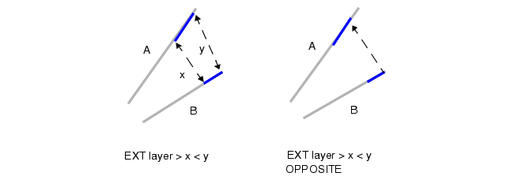

Opposite Symmetric Metrics
Opposite Symmetric is defined by the following steps:
Given edges A and B, apply the Opposite metric if A and B are parallel, perpendicular, or intersecting. Output any results from such edges as usual.
Otherwise, measure A and B by using the Opposite metric; however, do not perform the special treatment (see “Special Considerations for the Opposite Metric”) for exactly one non-orthogonal edge, as is done with the Opposite metric. Do not discard the output if the measurement was non-commutative (see Figure 2), as is done with the Opposite metric. This step can result in zero, one, or two outputs from each edge.
Discard all trivial output edges (see Trivial Edges). Because of properties within the Opposite metric, there can be at most one output edge from each input edge (even for interval constraints).
Quit with no output if, after discarding trivial edges, there is no output from A and no output from B. Otherwise, name the resulting output edges OA and OB. Either OA or OB may be non-existent, depending on the orientation of the edges and the size of the measurement regions.
Project edge OA, if it exists, onto B, which forms a segment PB. Project edge OB, if it exists, onto A, which forms a segment PA. Discard either PA or PB if they are a result of round-off error.
Produce the output of edge A, which is OA+PA. Produce the output from edge B, which is OB+PB
Produce no output for edge A if both OA and PA are non-existent. Produce no output for edge B if both OB and PB are non-existent.
The Opposite FSymmetric metric modifies Step 6 so that any portion of edge A between OA and PA is added to OA + PA, resulting in a single output edge from A. Likewise for B, OB, and PB. See the comment in the next figure.

The Opposite Extended Symmetric metric replaces Opposite measurement with Opposite Extended value measurement in Steps 1, 2, and 3 of the algorithm.
The Opposite Extended FSymmetric metric replaces Opposite measurement with Opposite Extended value measurement in Steps 1, 2, and 3 of the algorithm and performs the Step 6 modification in the same way as Opposite FSymmetric.